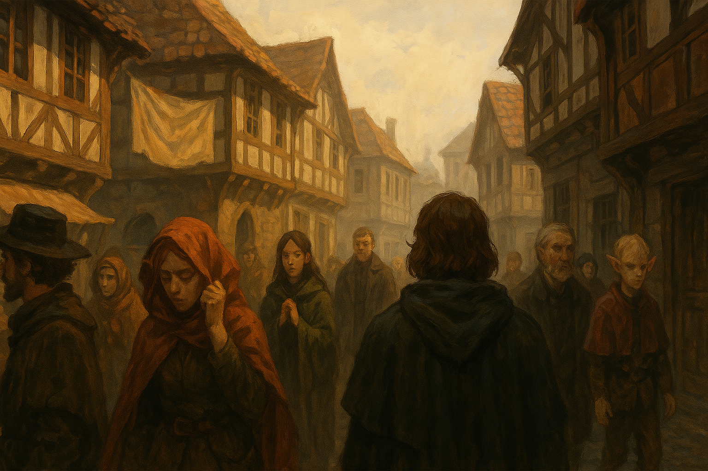

Chapter 1: Bitter Reunion
Korringfield Reunion


Korringfield Reunion
15048.10.01
台北市議員們離開暗巷前，花了點時間，好好將自己喬裝打扮一番。接著，自稱羅莎的佛列里夫人便帶領著他們，一起走向爵士的宅邸。一路上，台北市議員們注意到街上的人們偶爾注意了一下他們，不過似乎沒有造成太大的轟動。
另外，台北市議員也訝異的發現，現在的時間竟然已經是10月1日了，在地下城內的時間，應該沒有待那麼久……
來到了爵士宅邸，羅莎夫人上樓喚了弗列里爵士後，眾人才發現崔夏似乎消失了蹤影。烏柯告知了弗列里爵士後，化身成了一隻狗狗，而烏犧奧泥也帶著神王尼可，兩邊開始分頭尋找崔夏的蹤跡。
花了一些時間，兩方都沒有找到崔夏。突然，他們聽見了右側長廊傳出了關門的聲音，回頭一看，崔夏從其中一間房間走了出來，躡手躡腳。
幾位冒險者跑了過去，詢問崔夏到底去了哪裡。崔夏從口袋掏出五枚鑽石，要冒險者們保持安靜，並讓每個人各拿走一顆鑽石。大家便安靜地回到大廳去。
弗列里爵士帶著大家來到了左側長廊的圖書室，讓大家翻閱他收藏的書籍，台北市議員們也翻找了關於「沃瓦倫的惡魔」傳單、沃瓦倫滅鎮事件的消息、關於拉索斯教的書籍，以及關於如何馴養動物相關的書。
接著，弗列里爵士帶著大家上到二樓，讓大家分別挑選一間客房作為房間。大家在房間內稍作休息，烏柯前去找崔夏，告誡他剛剛的行為是不對的，而崔夏也表明自己剛來到這裡，覺得很新奇，所以不太受控制。
羅莎夫人也前去帕拉丁的房間，告訴他他的父親的事。帕拉丁的父親先前因為在王都發生意外，沒有及時醫治，被送回來寇林菲爾德並強制退休。羅莎夫人表示希望帕拉丁前去探望他的父親。
眾人出發回到市中心去，大家分別前往自己想要去的店舖，而羅莎夫人則帶著帕拉丁去找他的父親。
來到帕拉丁的老家，敲了敲門，開門的是家裡的老僕人。老僕人告訴帕拉丁，很高興他回來了，希望他快去看看他的父親。帕拉丁走上二樓，父親的醫生哈洛威醫師開了門，和帕拉丁簡單說明了他父親的狀況。目前因為傷勢嚴重，勢必要截肢。如果狀況更糟，很有可能會有生命危險。帕拉丁了解狀況後，前去和父親說了說話。帕拉丁的父親馬格努斯大人關心了一下他最愛的孩子，也告訴他，如果他哪天沒有要冒險了，自己的爵位會留給他。
在帕拉丁離開前，父親叫住了他，並告訴他，其實他的母親另有其人。帕拉丁一直視為母親的人其實並不是他的生母，他是父親在麥丁頓王國的王城麥克嵩與別人生下的孩子。而帕拉丁的生母被稱為麥克嵩的紫羅蘭，本名為珊吉雅。父親希望帕拉丁有機會可以去王城看看他。
15048.10.01
Before the Taipei City Council left the alley, they spent some time to disguise themselves. Then, Mrs. Flaerry, who called herself Rosa, led them to the Flaerry house. On their way, the Taipei City Council noticed that people on the street stared at them occasionally, but nothing dramatic happened.
The Taipei City Council also found it to be already October 1st, which was quite a surprise to them. They couldn't have stayed in the dungeon for so long......
As they entered the Flaerry house, Rosa went upstairs for Syr Flaerry, while the party found Trisha missing. Uko talked to Syr Flaerry, and turned into a dog, while Usioni took King Knicol. The two started looking for Trisha's track in different direction.
After some time, the both side couldn't find Trisha. Suddenly, they heard a door shot on the right wing. They saw Trisha sneaking out from a room.
Several adventurers went to Trisha, asking where she had been. Trisha took five pieces of diamonds from her pocket, telling the adventurers to keep quiet. She let the adventurers take one piece of diamond each. The group walked quiently back to the hallway.
Syr Flaerrytook everyone to his library on the left wing, permitting them to go through his collection. The Taipei City Council looked for the "Demons of Vowalon" flyer, news about the Vowalon massacre, books on the Laxthos, and also books on how to keep animals.
After that, Syr Flaerry led the group to the second floor, letting them each choose a guest room to stay. The party stayed at their room for some rest, while Uko went to Trisha, telling her what she had done was not right. Trisha was curious and not under control, since it was the first time she'd been here.
Rosa also went to Paladin's room, telling him about his father. Paladin's father, had an accident in the capital city, and was not treated medically in time, but sent back to Korringfield to force to retire. Rosa hoped Paladin to go see his father.
The party headed downtown, with everyone going to whatever shop they want to go, while Rosa took Paladin to his father.
Paladin knocked on the door as they arrived his home, and the old servant opened the door. The old servant was happy that Paladin came back, and hoped he go to his father quickly. Paladin went upstairs, the doctor of his father, Dr. Halloway opened the door for him, and briefly explained his father's situation to him. Due to the severness of his father's wounds, an amputation was inevitable. If it got even worse, it might have even took his father's life. Paladin went to his father and talked to him. His father, Syr Magnus, cared about his favorite child, and todl him whenever he decide not to adventure, he would pass on his title to him.
Before Paladin left. his father stopped him, and told him that his mother was someone else. The woman that Paladin always saw as his mother was not the one who gave birth to him. He was given birth by someone whom Syr Magnus met at Macksohn, the capital city of the Mattington Kingdom. Her name was Xandria, and was named "the Violet of Macksohn". Syr Magnus hoped Paladin to go see her in Macksohn some time.